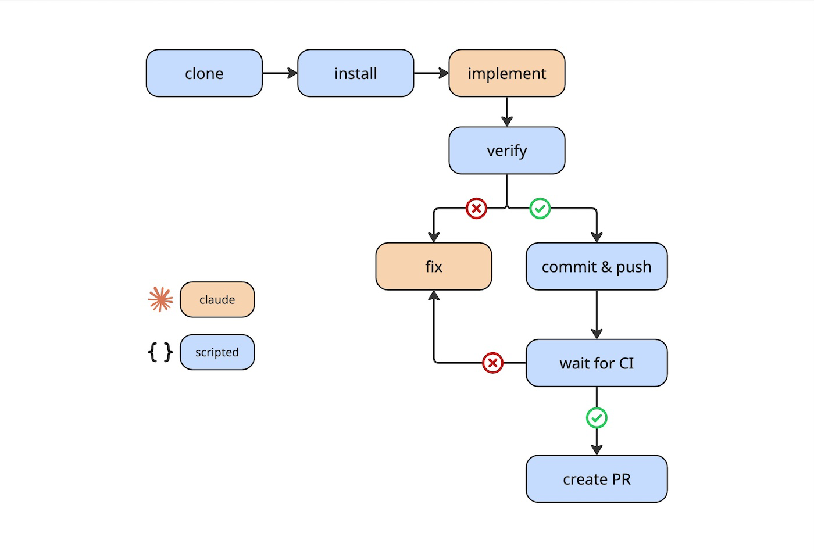

Working with LLMs and agents, one type of work felt like a perfect use case: repetitive and "boring" tasks. Things like refactoring, updating documentation, upgrading dependencies. Things that have to be repeated over time or over a large number of repos. I was reading left and right about people doing these automations using only agents. The prevalent way seemed to be writing a long prompt detailing all the steps. I myself tried this, but found it unreliable to call it an automation: you never know when the model decided that not running the tests was ok, forgot to lint after the 3rd fix or call it a day without checking CI.
Even more problematic was the waste: using Claude tokens to poll CircleCI felt absurd. The model would loop by itself waiting for the CI to finish, and sometimes decide that it was too long and gave up - and stopped there.
I've written scripts (before LLMs) to do this sort of thing, they were efficient but limited where LLMs really shine: navigating an unfamiliar codebase, figuring things out, adapting. I wanted to bridge the gap between the two but couldn't find a way to bring the strength of both in a coherent and agnostic system.
Then I read Stripe's post about their Minions. What they call Blueprint was exactly what I think such a system should be: a DAG of deterministic scripted steps and agent steps, where each does what it's actually good at. It clicked immediately. I searched for existing projects taking this approach but couldn't find anything, so I decided to build it.
I tried LangGraph first, but realized it didn't work well with an agent like Claude Code. It is made to use raw LLMs, and I preferred using Claude over reinventing an agent.
So I tried a much simpler approach: I built a simple engine from scratch in TypeScript - and it worked.
There is one thing that keeps worrying me though: the security aspect. Letting an agent run unsupervised is incredibly dangerous: at any point it could fetch something from the internet and hit a prompt injection. If it then has access to a secret or dangerous capability (like a shell), it's game over. So the architecture treats this seriously:
claudeflow is still in development but functional, ready for the next task that calls for it.